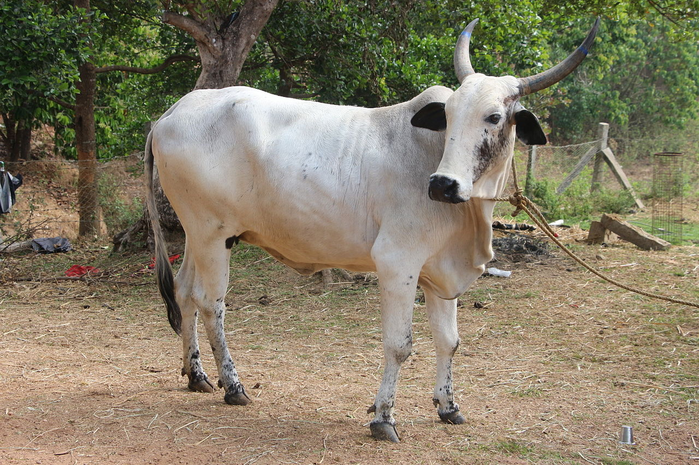

DEONI
Weight:
770 to 990 pounds
Height :
43 to 47 inches
Length:
30 to 36 inches
Color:
most common color pattern seen in Deoni cattle includes black, white, and shades of gray or brown.
Longevity:
10 – 15 years.
Deoni personality
Hardiness and Adaptability: Deoni cows are known for their hardiness and adaptability to various environmental conditions. They are well-suited to the hot and dry climate of the Deoni region of Maharashtra, India, where they originated. Their ability to thrive in such conditions reflects their resilience and toughness.
Gentle Temperament: Deoni cows typically have a gentle and docile temperament, making them relatively easy to handle and work with. This calm demeanor can be beneficial for traditional herding practices and interactions with humans.
What to expect
1.Hardiness and Adaptability: Deoni cows are known for their resilience and adaptability to the hot and dry climate of the Deoni region in Maharashtra, India. They are well-suited to semi-arid environments and are capable of thriving with minimal inputs.
2.Dual-Purpose Usage: Deoni cows are considered a dual-purpose breed, meaning they are utilized for both milk production and draught purposes. While they may not produce as much milk as specialized dairy breeds, they provide a moderate amount of milk suitable for local consumption and dairy products. Additionally, they are valued as draught animals for plowing fields and transporting goods, although this role has diminished with the advent of modern machinery.
3.Distinctive Appearance: Deoni cows are characterized by their distinctive tricolored or piebald coat, which typically includes patches of black, white, and shades of gray or brown. This unique appearance makes them easily recognizable among other cattle breeds.
4.Gentle Temperament: Deoni cows generally have a gentle and docile temperament, which makes them relatively easy to handle and work with. Their calm demeanor is beneficial for traditional herding practices and interactions with humans.
5.Maternal Instincts: Like many other cattle breeds, Deoni cows exhibit strong maternal instincts and protective behavior towards their calves. They are attentive mothers, ensuring the well-being and safety of their offspring within the herd.
History of the Deoni
Origins: The Deoni breed originated in the Deoni region of Maharashtra, which is characterized by its semi-arid climate and hilly terrain. The breed's ancestry can be traced back to indigenous cattle populations that have inhabited the region for centuries.
Selective Breeding: Over time, local farmers in the Deoni region practiced selective breeding to develop cattle with traits suited to the area's environmental conditions and agricultural needs. This selective breeding aimed to enhance characteristics such as hardiness, adaptability, and productivity.
Dual-Purpose Role: Deoni cattle were traditionally valued as dual-purpose animals, meaning they served multiple functions in agriculture. They were utilized for both milk production and draught purposes. Their ability to provide milk for household consumption and work as draught animals made them indispensable assets for small-scale farmers in the region.
Contribution to Agriculture: Deoni cows played a crucial role in the agricultural economy of the Deoni region, providing milk for local consumption and dairy products, as well as assisting with plowing fields and transporting goods. Their contribution to sustainable agriculture and rural livelihoods was significant.